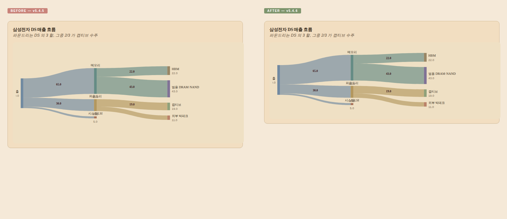

CHART-AP-20 — viewBox 과대 프로비저닝으로 다크 스테이지 아래쪽 ~40% 가 휑함. content-fit viewBox 패스로 해소.

좌측 (v5.4.5): viewBox 760×320 · 다크 스테이지 ≈ 361px · 아래쪽 ~60px 의 dead space. 우측 (v5.4.6): viewBox 760×238 · 스테이지 ≈ 263px · 위 7.86px / 아래 9.88px 로 균형.
H = Math.max(320, Math.min(560, 60 + nodes.length * 28)). 8-노드 sankey 의 자연 사이즈는 60+8×28=284 인데 320 으로 강제 → 36px 과대 프로비저닝.위치: src/templates/static/charts.js:drawSankey 의 colKeys forEach 직후, link slice 할당 *전에* 삽입.
const LABEL_PAD_ABOVE = 18; // 중간 col 노드 위쪽 라벨 (y0-6, font 11)
const LABEL_PAD_BELOW = 22; // 중간 col 노드 아래쪽 value 라벨 (y1+14, font 10)
const SVG_TOP_BREATH = 14;
const SVG_BOT_BREATH = 14;
let contentTop = Infinity, contentBot = -Infinity;
nodes.forEach(n => {
const above = (n.col > 0 && n.col < maxCol) ? LABEL_PAD_ABOVE : 0;
const below = (n.col > 0 && n.col < maxCol) ? LABEL_PAD_BELOW : 0;
if (n.y0 - above < contentTop) contentTop = n.y0 - above;
if (n.y1 + below > contentBot) contentBot = n.y1 + below;
});
const tightH = (contentBot - contentTop) + SVG_TOP_BREATH + SVG_BOT_BREATH;
if (tightH > 0 && tightH < H) {
const dy = SVG_TOP_BREATH - contentTop;
nodes.forEach(n => { n.y0 += dy; n.y1 += dy; });
svg.attr('viewBox', `0 0 ${W} ${Math.round(tightH)}`);
}
두 케이스 모두 위·아래 여백 차이 4px 이하 (충분히 대칭). 큰 sankey 케이스의 viewBox 도 396 → 256 으로 자연 압축.